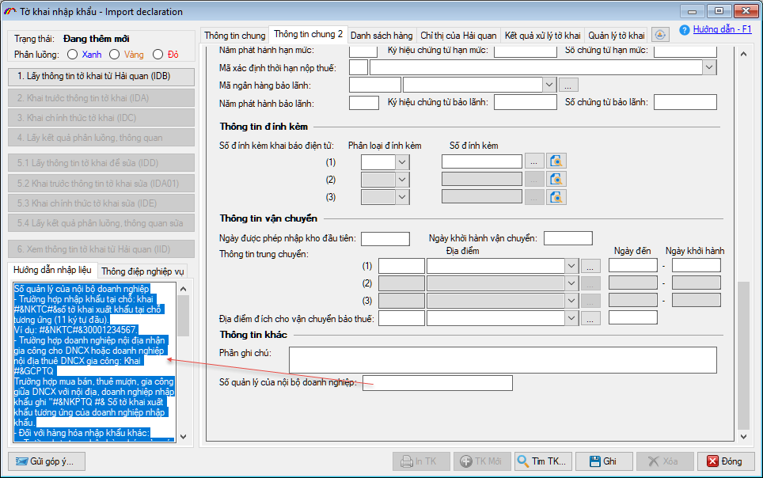
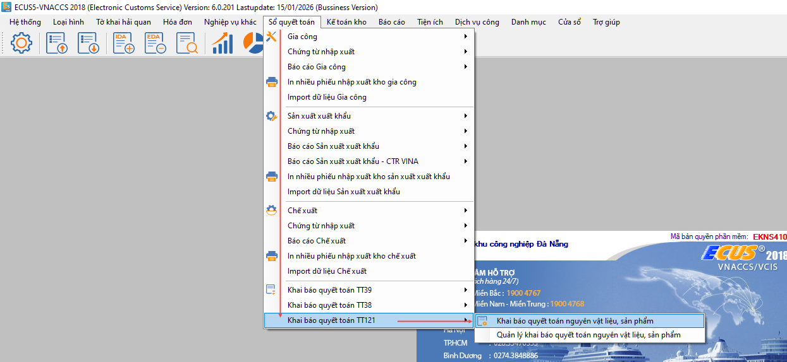
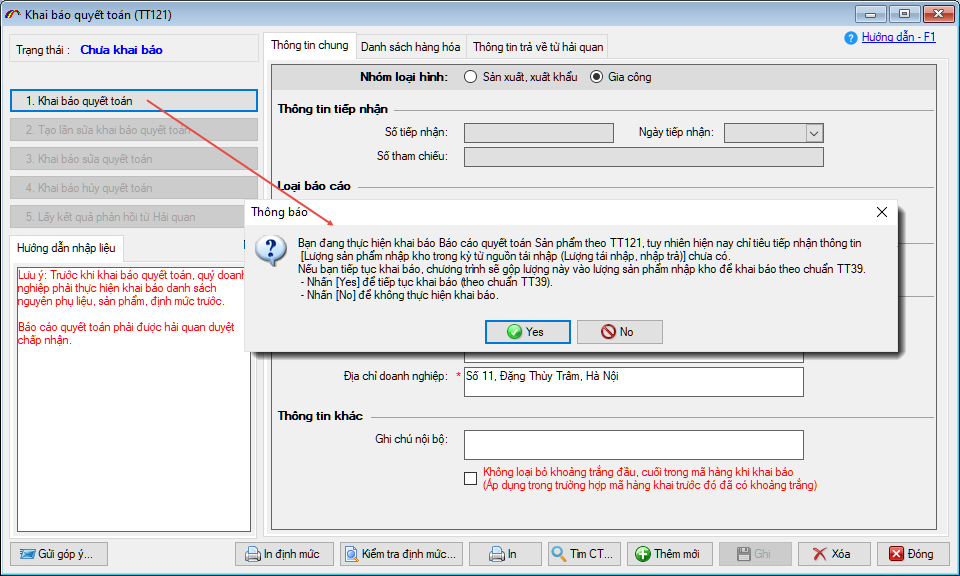
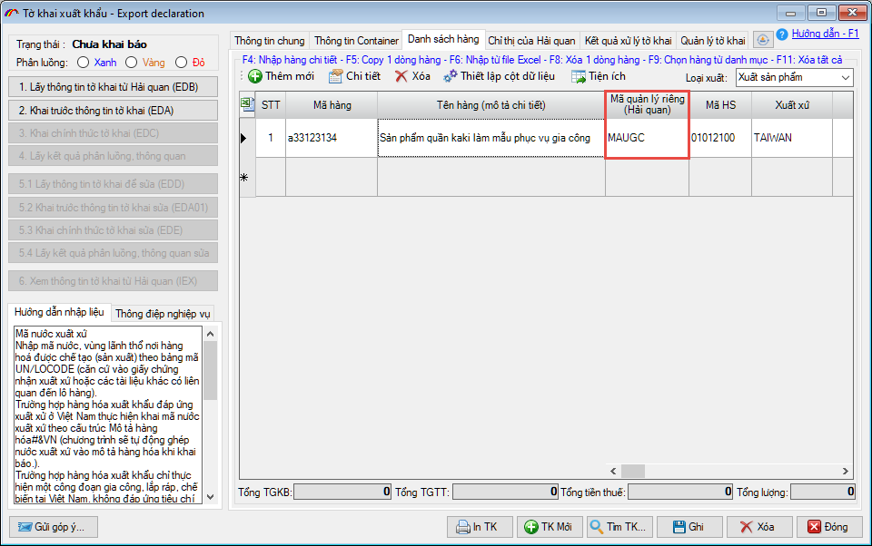
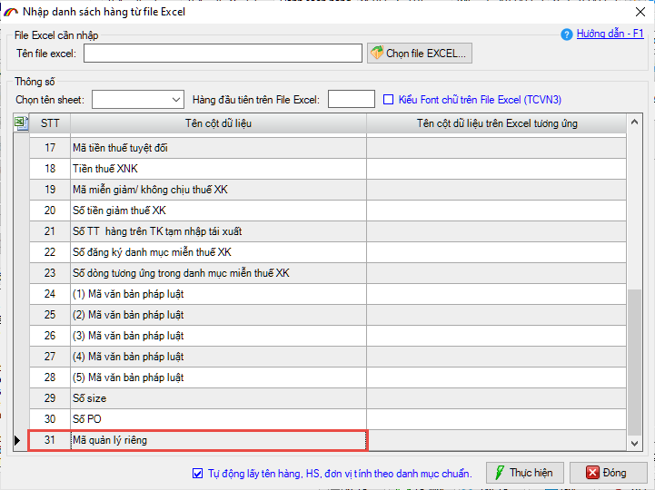
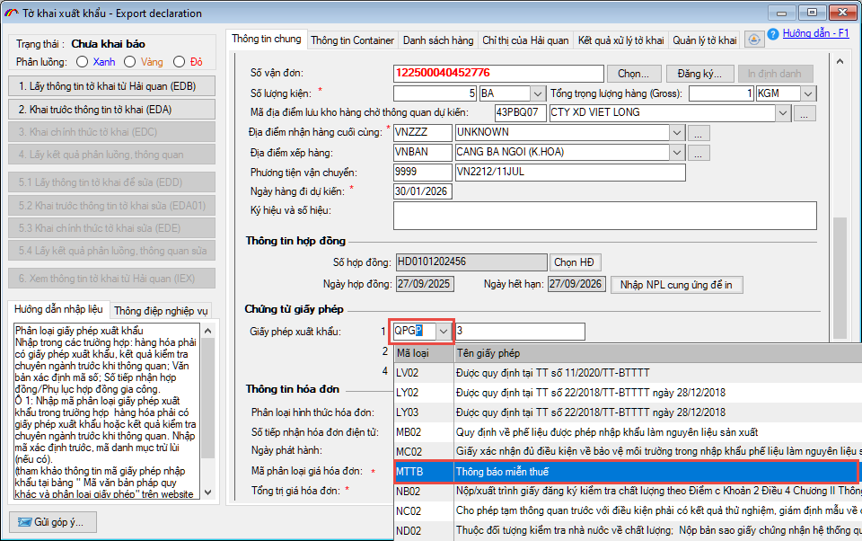
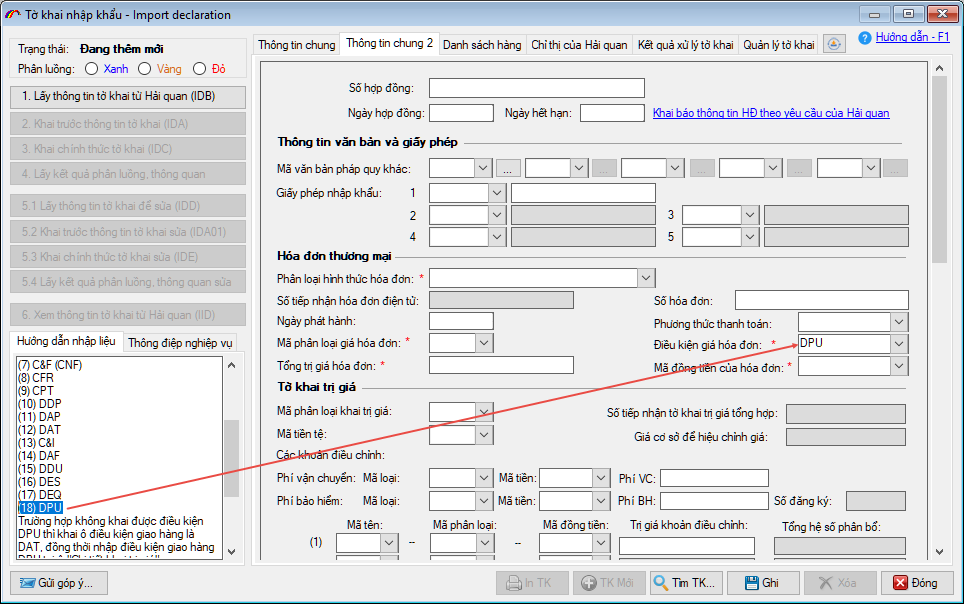
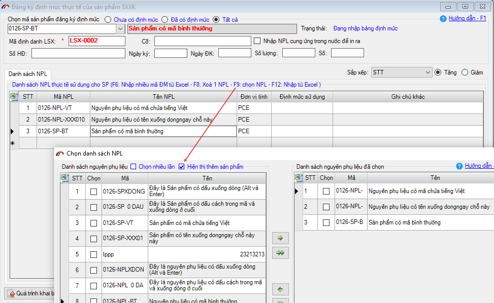

NHỮNG THAY ĐỔI TRÊN BẢN ECUS5VNACCS 2018
(Phiên bản update 01/02/2026)
Phần mềm ECUS5VNACCS2018 - Ngày phát hành 31/01/2026 | Version 6.0.203 | Lastupdate 01/02/2026 | Phiên bản CSDL 303
Phiên bản cập nhật ngày 01/02/2026 được phát hành ngày 31/01/2026 sửa đổi bổ sung một số chức năng, nhằm đáp ứng yêu cầu nghiệp vụ của một số nội dung thay đổi theo Thông tư số 121/2025/TT-BTC chính thức có hiệu lực ngày 01/02/2026. Các nội dung bổ sung cụ thể như phần chi tiết dưới đây:
- 1. Cập nhật, bổ sung hướng dẫn nhập liệu chỉ tiêu thông tin tờ khai.
Phần mềm đã bổ sung, cập nhật hướng dẫn nhập liệu cho các chỉ tiêu thông tin tờ khai xuất nhập khẩu được ban hành kèm Phụ lục I, Thông tư 121.

- 2. Bổ sung thêm menu chức năng BCQT theo quy định tại TT121.
Nhằm hỗ trợ doanh nghiệp trong việc nhập liệu, quản lý và in báo cáo quyết toán Sản phẩm theo quy định tại mẫu số 15a, ban hành kèm theo TT121, phần mềm ECUS đã bổ sung menu chức năng Sổ quyết toán / Khai báo cáo quyết toán theo TT121

Tuy nhiên, hiện nay chỉ tiêu tiếp nhận thông tin Lượng sản phẩm nhập kho trong kỳ từ nguồn tái nhập do khách hàng trả lại chưa có. Do đó, khi khai báo phần mềm sẽ hiển thị thông báo gộp số lượng của chỉ tiêu này vào cột Lượng nhập kho trong kỳ để khai báo theo chuẩn BCQT của TT39.

Tại form BCQT theo TT121 này, bạn có thể in được báo cáo ra cả 2 mẫu: Mẫu báo cáo theo TT39 và TT121.
- 3. Cho phép doanh nghiệp nhập dữ liệu cho chỉ tiêu Mã quản lý riêng của hàng hóa ngay trên danh sách hàng
Phần mềm đã đưa chỉ tiêu Mã quản lý riêng lên danh sách hàng để doanh nghiệp nhập dữ liệu, đáp ứng yêu cầu nghiệp vụ theo hướng dẫn dành cho chỉ tiêu Mã quản lý riêng, quy định tại Phụ lục I, TT121:

Doanh nghiệp cũng có thể nhập chỉ tiêu này tại form nhập dòng hàng chi tiết hoặc nhập bằng cách Import danh sách hàng từ excel

- 4. Bổ sung mã loại Giấy phép đối với hàng hóa miễn thuế, an ninh Quốc phòng
Bổ sung thêm 2 mã giấy phép:
- QPGP: Giấy phép nhập khẩu đối với hàng hóa nhập khẩu phục vụ trực tiếp cho ANQP.
- MTTB: Thông báo miễn thuế hàng hóa nhập khẩu phục vụ trực tiếp cho ANQP.

- 5. Bổ sung mã điều kiện giao hàng mới..
Bổ sung thêm điều kiện giao hàng DPU - Giao hàng tại nơi dỡ hàng.

- 6. Cho phép chọn Mã sản phẩm vào trong danh sách NPL thành phần của định mức sản phẩm.
Phần mềm bổ sung chức năng cho phép người dùng chọn Mã sản phẩm vào trong bảng NPL thành phần của định mức thực tế. Để chọn, bạn nhấn phím F9 sau đó tích chọn vào Hiển thị thêm sản phẩm:

- 7. Ngoài ra phần mềm còn sửa đổi, bổ sung một số tính năng khác nhằm nâng cao hiệu suất sử dụng.
Bản quyền © thuộc về Công ty TNHH Phát triển công nghệ Thái Sơn